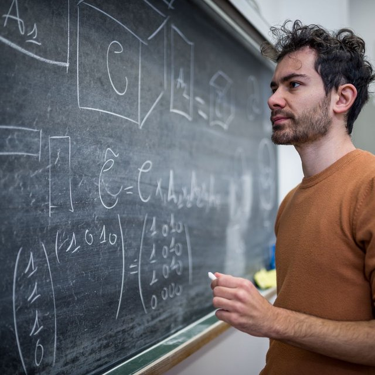

Hi, I'm Alberto! I'm a Postdoctoral researcher at The University of Edinburgh (United Kingdom), specializing in numerical linear algebra. My research centers on tensors, low-rank approximations, randomized techniques, and resolution of PDEs, with additional interests in centrality measures, Krylov methods, and applications in quantum computing. I am currently involved in the EPSRC project Randomized Numerical Linear Algebra for Optimization and Control of PDEs, with P.I. John Pearson and Stefan Güttel. I got a PhD in mathematics at the University of Pisa, where I had the pleasure of working with Prof. Leonardo Robol. For more details, feel free to check my CV.
Research interests
News
- New preprint with S. Güttel and J. W. Pearson: fast matrix–vector products in tensor-train format via structured sketching.
- New preprint: randomized flexible LSQR and LSMR, with applications to inverse problems.
- PhD in Mathematics, University of Pisa. Thesis: Randomized techniques for low-rank approximation of matrices and tensors with applications.
Psst! Wanna jump into another dimension?